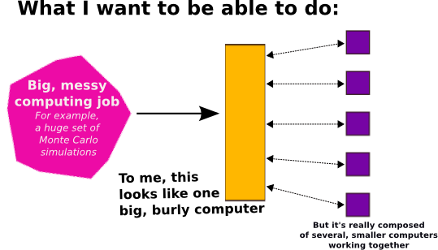
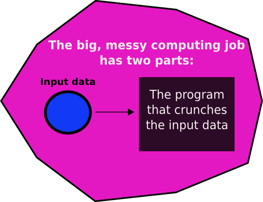
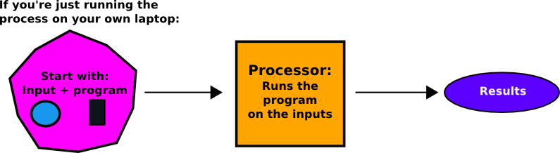
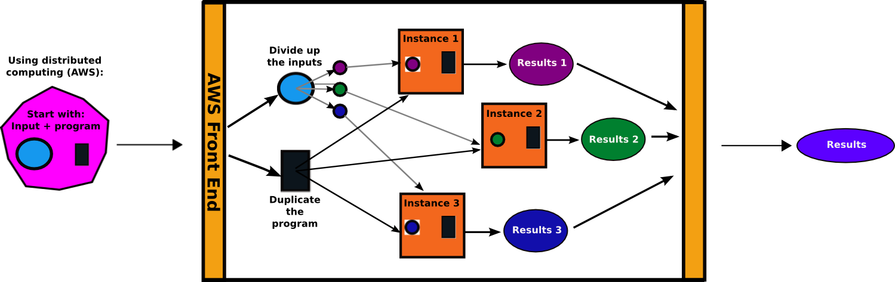
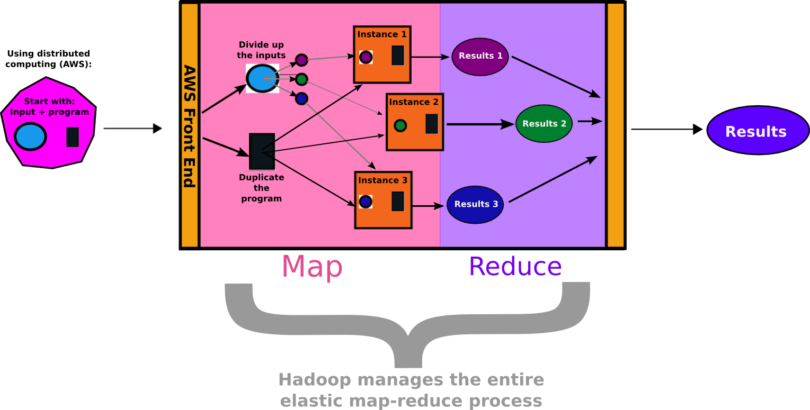

Date & Time: Oct. 17, 2012
Location: campus
Computing context: MachoMac
(/Desktop/Research/CppHenyeyCode/src, /Desktop/Research/BodenheimerCode/UnalteredCode)
From last time:
...I'm pretty sure this boils down to how the outermost G values are calculated, which in turn depends on how the atmospheric P/T/R/rho values are getting calculated. Debugging my atmos subroutine is probably going to be a long, involved, gnarly process that will drag on for about another month.
Still to do:
Still need to fix the problem w/ the G values disagreeing at the outermost boundary
To Do Today:
G-debugging, in more detail:
So, it looks like I just need to get the P R and T values out at the outer boundary, and then also at the inner edge of the atmos (?) and I Should be able to compare Peter Is c ode w/ my own, and thereby at Least debug what is going on w/ Helena @ the outer boundary
Although, I'm kind of unsure of of whether getting the exact same Pl T/R/ rho Values that Peter does at the outer boundary is going to let Helena calculate the same dX profiles Mat Peter's code does b/c when I just set the Outer G values to what he got, I didn't end up w/ the same dX profiles that his code did
Though that might well be b/c I didn't also reset the outer most D matrix values to what he'd gotten and those depend not just on how those P,T, and Ratm values are (or the accuracy thereof) but also on how those values are being found to change w/ respect to the outer boundary conds being fed to the atmos subroutine
This, in turn, suggests that not only is my atmos subroutine getting the wrong atmos values, but that it 's also somehow getting the way that the atmos variables couple to and depend upon each other wrong... which surely must be due to the way I coded my Rk4 algorithm in the first place (oh no...)
[] Get Peter's code to write out the atmos vars (T,P,R) at the following points:
[] Just the regular outer boundary, before any of the outer boundary values get changed
[] Outer boundary with *just* the Router value varied
[] Outer boundary with *just* Louter value varied
[] Outer boundary with *just* Touter value varied
[] Outer boundary with *just* Pouter value varied
[] Calculate the G values and the D values by hand, based on the numbers you get out in that previous step.
Notes on progress/ideas/to-do for the Amazon Web Service elastic computing thing:
Here are a series of sketches that summarize my current understanding of how this whole elastic computing with imaginary machines on the Amazon servers works:





So, what I've been trying to figure out is how to use Hadoop for the types of projects I'm working on-- something where the function I'd be applying to the data (the map function) is, say, running my C++ Henyey code on a list of different starting models.
The issues I'm currently trying to sort out are as follows:
1) Hadoop, by itself, Only takes map and reduce functions written in Java. However, Java is Hard. Also, more importantly, most scientific codes are *not* written in Java, or in *any* scripting language for that matter. So, how to get Hadoop to use one of those codes as its 'map' function?
2) you can start to get around that problem by using Hadoop streaming, which takes *any* executable programs in the "map" and "reduce" Slots . So, if you have program.cpp that Compiles to the executable myProgram, you could specify myProgram as your "map" function.
However, this still requires that ALL the inputs to myProgram come from the command line. In the case of Helena, and many other Scientific computing codes, the program needs to read in MUCH more than just a few parameter values in order to do its task. For instance, Helena needs to read in an entire file of data to start its initial model . In addition, it needs to read in several files containing the E0S look-up table values. So, the question is: --> How do you pass along the input files that your executable needs w/ the function call to myProgram? (I've Seen some mention of zipping up the external files & passing that single .gz file along w/ the Hadoop map - reduce call, but I'm not entirely sure how that works, Or whether passing copies of all those extra files, zipped or not, will end up making the process too Computationally or memoy-usage-ly intensiVe.